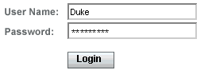
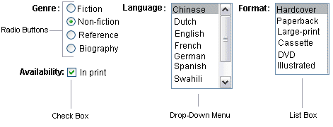
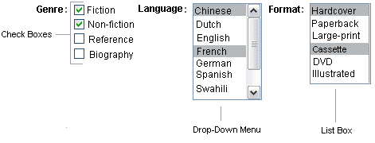
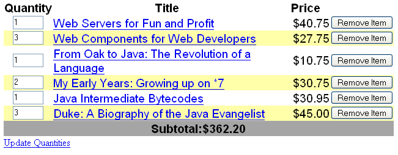

Adding Components to a Page Using HTML Tags
The tags defined by the JavaServer Faces standard HTML tag library represent HTML form components and other basic HTML elements. These components display data or accept data from the user. This data is collected as part of a form and is submitted to the server, usually when the user clicks a button. This section explains how to use each of the component tags shown in Table 7-1.
Table 7-1 The Component Tags
The next section explains the important tag attributes that are common to most component tags. For each of the components discussed in the following sections, Writing Bean Properties explains how to write a bean property bound to a particular component or its value.
Common Component Tag Attributes
In general, most of the component tags support the following attributes:
immediate: If set to true, indicates that any events, validation, and conversion associated with the component should happen in the apply request values phase rather than a later phase.
rendered: Specifies a condition under which the component should be rendered. If the condition is not satisfied, the component is not rendered.
style: Specifies a Cascading Style Sheet (CSS) style for the tag.
styleClass: Specifies a CSS stylesheet class that contains definitions of the styles.
value: Identifies an external data source and binds the component’s value to it.
binding: Identifies a bean property and binds the component instance to it.
All of the tag attributes (except id) can accept expressions, as defined by the EL, described in Chapter 6, Expression Language.
The id Attribute
The id attribute is not usually required for a component tag. It is used when another component or a server-side class must refer to the component. If you don’t include an id attribute, the JavaServer Faces implementation automatically generates a component ID. Unlike most other JavaServer Faces tag attributes, the id attribute only takes expressions using the evaluation syntax described in The immediate Attribute, which uses the ${} delimiters. For more information on expression syntax, see Value Expressions.
The immediate Attribute
Input components and command components (those that implement ActionSource, such as buttons and hyperlinks) can set the immediate attribute to true to force events, validations, and conversions to be processed during the apply request values phase of the life cycle (a subphase in the request phase of the JavaServer Faces lifecycle).
You need to carefully consider how the combination of an input component’s immediate value and a command component’s immediate value determines what happens when the command component is activated.
Assume that you have a page with a button and a field for entering the quantity of a book in a shopping cart. If both the button’s and the field’s immediate attributes are set to true, the new value entered in the field will be available for any processing associated with the event that is generated, when the button is clicked. The event associated with the button, and the event validation and conversion associated with the field, are all handled during the apply request values phase.
If the button’s immediate attribute is set to true but the field’s immediate attribute is set to false, the event associated with the button is processed without updating the field’s local value to the model layer. This is because any events, conversion, or validation associated with the field occurs during its usual phases of the life cycle, which come after the apply request values phase.
For a complete description of JavaServer Faces lifecycle phases, see the JavaServer Faces 2.0 Specification.
The rendered Attribute
A component tag uses a Boolean EL expression along with the rendered attribute, to determine whether or not the component will be rendered. For example, the commandLink component in the following section of a page is not rendered if the cart contains no items:
<h:commandLink id="check"
...
rendered="#{cart.numberOfItems > 0}">
<h:outputText
value="#{bundle.CartCheck}"/>
</h:commandLink>Unlike nearly every other JavaServer Faces tag attribute, the rendered attribute is restricted to using rvalue expressions. As explained in Value and Method Expressions, these rvalue expressions can only read data; they cannot write the data back to the data source. Therefore, expressions used with rendered attributes can use the arithmetic operators and literals that rvalue expressions can use but lvalue expressions cannot use. For example, the expression in the preceding example uses the > operator.
The style and styleClass Attributes
The style and styleClass attributes allow you to specify Cascading Style Sheets (CSS) styles for the rendered output of your tags. Displaying Error Messages With the h:message and h:messages Tags describes an example of using the style attribute to specify styles directly in the attribute. A component tag can instead refer to a CSS stylesheet class.
The following example shows the use of a dataTable tag that references the style class list-background:
<h:dataTable id="books"
...
styleClass="list-background"
value="#{bookDBAO.books}"
var="book">The stylesheet that defines this class is stylesheet.css, which will be included in the application. For more information on defining styles, see Cascading Style Sheets Specification at http://www.w3.org/Style/CSS/.
The value and binding Attributes
A tag representing an Output component or a subclass of the Output component class uses value and binding attributes, to bind its component’s value or instance respectively to an external data source.
HTML Head and Body Tags
The new HTML head (h:head) and body (h:body) tags add HTML type page structure to JavaServer Faces web pages.
The h:head tag represents the head element of a HTML page
The h:body tag represents the body element of a HTML page
The following is an example of an XHTML page using the usual head and body markups:
<!DOCTYPE html PUBLIC "-//W3C//DTD XHTML 1.0 Transitional//EN" "http://www.w3.org/TR/xhtml1/DTD/xhtml1-transitional.dtd"> <html xmlns="http://www.w3.org/1999/xhtml"> <head> <title>Add a title</title> </head> <body> Add Content </body>
The following is an example of an XHTML page using h:head and h:body tags:
<!DOCTYPE html PUBLIC "-//W3C//DTD XHTML 1.0 Transitional//EN"
"http://www.w3.org/TR/xhtml1/DTD/xhtml1-transitional.dtd">
<html xmlns="http://www.w3.org/1999/xhtml"
xmlns:h="http://java.sun.com/jsf/html">
<h:head>
Add a title
</h:head>
<h:body>
Add Content
</h:body>Both of the above example code segments render the same HTML elements. The head and body tags are mainly useful for resource relocation. For more information on resource relocation, see Resource Relocation Using h:output Tags.
Form Components
An h:form tag represents an input form, which includes child components that can contain data, that is either presented to the user or submitted with the form.
Figure 7-1 shows a typical login form in which a user enters a user name and password, then submits the form by clicking the Login button.
Figure 7-1 A Typical Form
The h:form tag represents the Form component on the page and encloses all the components that display or collect data from the user, as shown here:
<h:form> ... other JavaServer Faces tags and other content... </h:form>
The h:form tag can also include HTML markup to lay out the components on the page. Note that the h:form tag itself does not perform any layout; its purpose is to collect data and to declare attributes that can be used by other components in the form.
A page can include multiple h:form tags, but only the values from the form submitted by user will be included in the postback request.
Using Text Components
Text components allow users to view and edit text in web applications. The basic types of text components are as follows:
Label, which displays read-only text.
Text field, which allows users to enter text, often to be submitted as part of a form.
Text area, which is a type of text field that allows users to enter multiple lines of text.
Password field, which is a type of text field that displays a set of characters, such as asterisks, instead of the password text that the user enters.
Figure 7-2 shows examples of these text components.
Figure 7-2 Example Text Components

Text components can be categorized into two types: Input and Output. A JavaServer Faces Output component is rendered as a read-only text. An example is a label. A JavaServer Faces Input component is rendered as an editable text. An example is a text field.
The Input and Output components can each be rendered in one of four ways to display more specialized text. Table 7-2 and Table 7-3 list the tags that represent the Input and Output components.
Note - The name of a tag is composed of the name of the component and the name of the renderer. For example, the h:inputText tag refers to an Input component that is rendered with the Text renderer.
Table 7-2 Input Tags
Tag |
Function |
|---|---|
Allows a page author to include a hidden variable in a page |
|
The standard password field: Accepts one line of text with no spaces and displays it as a set of asterisks as it is typed |
|
The standard text field: Accepts a text string of one line |
|
The standard text area: Accepts multiple lines of text |
The Input tags support the following tag attributes in addition to those described in Common Component Tag Attributes. Note that this list does not include all the attributes supported by the Input tags, but just those that are used most often. For the complete list of attributes, refer to the documentation at http://download.oracle.com/docs/cd/E17410_01/javaee/6/javaserverfaces/2.0/docs/pdldocs/facelets/.
converter: Identifies a converter that will be used to convert the component’s local data. See Using the Standard Converters for more information on how to use this attribute.
converterMessage: Specifies an error message to display when the converter registered on the component fails.
dir: Specifies the direction of the text displayed by this component. Acceptable values are LTR, meaning left-to-right, and RTL, meaning right-to-left.
label: Specifies a name that can be used to identify this component in error messages.
lang: Specifies the code for the language used in the rendered markup, such as en_US.
required: Takes a boolean value that indicates whether or not the user must enter a value in this component.
requiredMessage: Specifies an error message to display when the user does not enter a value into the component.
validator: Identifies a method expression pointing to a backing bean method that performs validation on the component’s data. See Referencing a Method That Performs Validation for an example of using the f:validator tag.
f:validatorMessage: Specifies an error message to display when the validator registered on the component fails to validate the component’s local value.
valueChangeListener: Identifies a method expression that points to a backing bean method that handles the event of entering a value in this component. See Referencing a Method That Handles a Value-Change Event for an example of using valueChangeListener.
Table 7-3 Output Tags
The Output tags support the converter tag attribute in addition to those listed in Common Component Tag Attributes.
The rest of this section explains how to use selected tags listed in Table 7-2 and Table 7-3. The other tags are written in a similar way.
Rendering a Text Field With the inputText Tag
The h:inputText tag is used to display a text field. A similar tag, the h:outputText tag, displays a read-only, single-line string. This section shows you how to use the h:inputText tag. The h:outputText tag is written in a similar way.
Here is an example of an h:inputText tag:
<h:inputText id="name" label="Customer Name" size="50"
value="#{cashier.name}"
required="true"
requiredMessage="#{customMessages.CustomerName}">
<f:valueChangeListener
type="com.sun.bookstore6.listeners.NameChanged" />
</h:inputText>The label attribute specifies a user-friendly name that will be used in the substitution parameters of error messages displayed for this component.
The value attribute refers to the name property of a backing bean named CashierBean. This property holds the data for the name component. After the user submits the form, the value of the name property in CashierBean will be set to the text entered in the field corresponding to this tag.
The required attribute causes the page to reload with errors (displayed on the screen) if the user does not enter a value in the name text field. The JavaServer Faces implementation checks whether the value of the component is null or is an empty string.
If your component must have a not null value or a String value at least one character in length, you should add a required attribute to your tag and set its value to true. If your tag has a required attribute that is set to true and the value is null or a zero-length string, no other validators that are registered on the tag are called. If your tag does not have a required attribute set to true, other validators that are registered on the tag are called, but those validators must handle the possibility of a null or zero-length string.
Rendering a Password Field With the inputSecret Tag
The h:inputSecret tag renders an <input type="password"> HTML tag. When the user types a string into this field, a row of asterisks is displayed instead of the text typed by the user. Here is an example:
<h:inputSecret redisplay="false"
value="#{LoginBean.password}" />In this example, the redisplay attribute is set to false. This will prevent the password from being displayed in a query string or in the source file of the resulting HTML page.
Rendering a Label With the outputLabel Tag
The h:outputLabel tag is used to attach a label to a specified input field for the purpose of making it accessible. The following page uses an h:outputLabel tag to render the label of a check box:
<h:selectBooleanCheckbox
id="fanClub"
binding="#{cashier.specialOffer}" />
<h:outputLabel for="fanClub"
binding="#{cashier.specialOfferText}" >
<h:outputText id="fanClubLabel"
value="#{bundle.DukeFanClub}" />
</h:outputLabel>
...The for attribute of the h:outputLabel tag maps to the id of the input field to which the label is attached. The h:outputText tag nested inside the h:outputLabel tag represents the actual label component. The value attribute on the h:outputText tag indicates the text that is displayed next to the input field.
Instead of using an h:outputText tag for the text displayed as a label, you can simply use the h:outputLabel tag’s value attribute. The following code snippet shows what the previous code snippet would look like if it used the value attribute of the h:outputLabel tag to specify the text of the label. Here is an example:
<h:selectBooleanCheckbox
id="fanClub"
binding="#{cashier.specialOffer}" />
<h:outputLabel for="fanClub"
binding="#{cashier.specialOfferText}"
value="#{bundle.DukeFanClub}" />
</h:outputLabel>
...
Rendering a Hyperlink With the h:outputLink Tag
The h:outputLink tag is used to render a hyperlink that, when clicked, loads another page but does not generate an action event. You should use this tag instead of the h:commandLink tag if you always want the URL (specified by the h:outputLink tag’s value attribute) to open and do not want any processing to performed when the user clicks the link. Here is an example:
<h:outputLink value="javadocs">
Documentation for this demo
</h:outputLink>The text in the body of the outputLink tag identifies the text that the user clicks to get to the next page.
Displaying a Formatted Message With the h:outputFormat Tag
The h:outputFormat tag allows display of concatenated messages as a MessageFormat pattern, as described in the API documentation for java.text.MessageFormat (see http://java.sun.com/javase/6/docs/api/java/text/MessageFormat.html). Here is an example of an outputFormat tag:
<h:outputFormat value="Hello, {0} !">
<f:param value="Bill"
</h:outputFormat>The value attribute specifies the MessageFormat pattern. The param tag specifies the substitution parameters for the message. The value of the parameter replaces the {0} in the sentence. The message displayed in the page is as follows:
Hello, Bill!
This is an example of hard-coding the data to be substituted in the message by using a literal value with the value attribute on the param tag.
A h:outputFormat tag can include more than one param tag for those messages that have more than one parameter that must be concatenated into the message. If you have more than one parameter for one message, make sure that you put the param tags in the proper order so that the data is inserted in the correct place in the message. Here is the preceding example modified with an additional parameter:
<h:outputFormat value="Hello, {0}! You are visitor number {1} to the page.">
<f:param value="Bill"
<f:param value="#{bean.numVisitor}">
</h:outputFormat>The value of {1} is replaced by the second parameter. The parameter is an EL expression bean.numVisitor, where the property numVisitor of the backing bean bean keeps track of visitors to the page. This is an example of a value-expression-enabled tag attribute accepting an EL expression. The message displayed in the page is now as follows:
Hello, Bill! You are visitor number 10 to the page.
Using Command Components for Performing Actions and Navigation
In JavaServer Faces applications, the button and hyperlink component tags are used to perform actions, such as submitting a form, and for navigating to another page. They are called command components because they perform an action when activated.
The h:commandButton tag is rendered as a button. The h:commandLink tag is rendered as a hyperlink.
In addition to the tag attributes listed in Common Component Tag Attributes, the h:commandButton and h:commandLink tags can use the following attributes:
action, which is either a logical outcome String or a method expression pointing to a bean method that returns a logical outcome String. In either case, the logical outcome String is used to determine what page to access when the Command component is activated.
actionListener, which is a method expression pointing to a bean method that processes an action event fired by the Command component.
See Referencing a Method That Performs Navigation for more information on using the action attribute. See Referencing a Method That Handles an Action Event for details on using the actionListener attribute.
Rendering a Button With the h:commandButton Tag
If you are using a commandButton component, when a user clicks the button, the data from the current page is processed, and the next page is opened. Here is an example of the h:commandButton tag:
<h:commandButton value="Submit"
action="#{cashier.submit}"/>Clicking the button will cause the submit method of CashierBean to be invoked because the action attribute references this method. The submit method performs some processing and returns a logical outcome.
The value attribute of the example commandButton tag references the button’s label. For information on how to use the action attribute, see Referencing a Method That Performs Navigation.
Rendering a Hyperlink With the h:commandLink Tag
The h:commandLink tag represents an HTML hyperlink and is rendered as an HTML <a> element. It acts like a form submit button and is used to submit an action event to the application.
A h:commandLink tag must include a nested h:outputText tag, which represents the text that the user clicks to generate the event. Here is an example:
<h:commandLink id="NAmerica" action="bookstore"
actionListener="#{localeBean.chooseLocaleFromLink}">
<h:outputText value="#{bundle.English}" />
</h:commandLink>This tag will render the following HTML:
<a id="_id3:NAmerica" href="#"
onclick="document.forms[’_id3’][’_id3:NAmerica’].
value=’_id3:NAmerica’;
document.forms[’_id3’].submit();
return false;">English</a>
Note - The h:commandLink tag will render JavaScript programming language. If you use this tag, make sure your browser is enabled for JavaScript technology.
Adding Graphics and Images With the h:graphicImage Tag
In a JavaServer Faces application, the Graphic component represents an image. The h:graphicImage tag is used to render a Graphic component on a page.
<h:graphicImage id="mapImage" url="/template/world.jpg"/>
The url attribute specifies the path to the image. The URL of the example tag begins with a /, which adds the relative context path of the web application to the beginning of the path to the image.
Alternately, you can also use the Resources facility to point to the image location. Here is an example:
<h:graphicImage value="#{resource['images:wave.med.gif']}"/>
Laying Out Components With the Panel Component
In a JavaServer Faces application, you use the Panel component as a layout container for a set of other components. The Panel component is rendered as an HTML table. Table 7-4 lists the tags corresponding to the Panel component.
Table 7-4 Panel Component Tags
Tag |
Attributes |
Function |
|---|---|---|
columns,columnClasses, footerClass, headerClass, panelClass, rowClasses |
Displays a table |
|
layout |
Groups a set of components under one parent |
The h:panelGrid tag is used to represent an entire table. The h:panelGroup tag is used to represent rows in a table. Other tags are used to represent individual cells in the rows.
The columns attribute is required if you want your table to have more than one column because the attribute defines how to group the data in the table. The h:panelGrid tag also has a set of attributes that specify CSS stylesheet classes: columnClasses, footerClass, headerClass, panelClass, and rowClasses. These stylesheet attributes are optional.
If the headerClass attribute value is specified, the panelGrid must have a header as its first child. Similarly, if a footerClass attribute value is specified, the panelGrid must have a footer as its last child.
Here is an example:
<h:panelGrid columns="3" headerClass="list-header"
rowClasses="list-row-even, list-row-odd"
styleClass="list-background"
title="#{bundle.Checkout}">
<f:facet name="header">
<h:outputText value="#{bundle.Checkout}"/>
</f:facet>
<h:outputText value="#{bundle.Name}" />
<h:inputText id="name" size="50"
value="#{cashier.name}"
required="true">
<f:valueChangeListener
type="listeners.NameChanged" />
</h:inputText>
<h:message styleClass="validationMessage" for="name"/>
<h:outputText value="#{bundle.CCNumber}"/>
<h:inputText id="ccno" size="19"
converter="CreditCardConverter" required="true">
<bookstore:formatValidator
formatPatterns="9999999999999999|
9999 9999 9999 9999|9999-9999-9999-9999"/>
</h:inputText>
<h:message styleClass="validationMessage" for="ccno"/>
...
</h:panelGrid>The above h:panelGrid tag is rendered as a table that contains components in which the bookstore customer inputs personal information. This h:panelGrid tag uses stylesheet classes to format the table. The following code shows the list-header definition:
.list-header {
background-color: #ffffff;
color: #000000;
text-align: center;
}Because the h:panelGrid tag specifies a headerClass, the panelGrid must contain a header. The example panelGrid tag uses a facet tag for the header. Facets can have only one child, so an h:panelGroup tag is needed if you want to group more than one component within a facet. The example h:panelGrid tag has only one cell of data, therefore an h:panelGroup tag is not needed.
The h:panelGroup tag has an attribute, layout, in addition to those listed in Common Component Tag Attributes. If the layout attribute has the value block, then an HTML div element is rendered to enclose the row; otherwise, an HTML span element is rendered to enclose the row. If you are specifying styles for the h:panelGroup tag, you should set the layout attribute to block in order for the styles to be applied to the components within the h:panelGroup tag. You should do this because styles such as those that set width and height are not applied to inline elements, which is how content enclosed by the span element is defined.
An h:panelGroup tag can also be used to encapsulate a nested tree of components so that the tree of components appears as a single component to the parent component.
Data, represented by the nested tags, is grouped into rows according to the value of the columns attribute of the h:panelGrid tag. The columns attribute in the example is set to 3, and therefore the table will have three columns. The column in which each component is displayed is determined by the order in which the component is listed on the page modulo 3. So, if a component is the fifth one in the list of components, that component will be in the 5 modulo 3 column, or column 2.
Displaying Components for Selecting One Value
Another commonly used component is one that allows a user to select one value, whether it is the only value available or one of a set of choices. The most common examples of this selectOnecomponent are as follows:
An h:selectBooleanCheckbox tag, displayed as a check box, which represents the boolean state
An h:selectOneRadio tag, displayed as a set of radio buttons
An h:selectOneMenu tag, displayed as a drop-down menu, with a scrollable list
An h:selectOneListbox tag, displayed as a list box, with an unscrollable list
Figure 7-3 shows examples of these components.
Figure 7-3 Example Select One Components
Displaying a Check Box Using the h:selectBooleanCheckbox Tag
The SelectBoolean component defines tags that have a boolean value. The h:selectBooleanCheckbox tag is the only tag that JavaServer Faces technology provides for representing the boolean state.
Here is an example that shows how to use the h:selectBooleanCheckbox tag:
<h:selectBooleanCheckbox
id="fanClub"
rendered="false"
binding="#{cashier.specialOffer}" />
<h:outputLabel
for="fanClub"
rendered="false"
binding="#{cashier.specialOfferText}">
<h:outputText
id="fanClubLabel"
value="#{bundle.DukeFanClub}" />
</h:outputLabel>This example tag displays a check box to allow users to indicate whether they want to join the Duke Fan Club. The label for the check box is rendered by the outputLabel tag. The actual text is represented by the nested outputText tag.
Displaying a Menu Using the h:selectOneMenu Tag
A SelectOne component allows the user to select one value from a set of values. This component can be rendered as a list box, a set of radio buttons, or a menu. This section explains the h:selectOneMenu tag. The h:selectOneRadio and h:selectOneListbox tags are used in a similar way. The h:selectOneListbox tag is similar to the h:selectOneMenu tag except that h:selectOneListbox defines a size attribute that determines how many of the items are displayed at once.
The h:selectOneMenu tag represents a component that contains a list of items from which a user can choose one item. This menu component is also commonly known as a drop-down list or a combo box. The following code snippet shows how the h:selectOneMenu tag is used, to allow the user to select a shipping method:
<h:selectOneMenu id="shippingOption"
required="true"
value="#{cashier.shippingOption}">
<f:selectItem
itemValue="2"
itemLabel="#{bundle.QuickShip}"/>
<f:selectItem
itemValue="5"
itemLabel="#{bundle.NormalShip}"/>
<f:selectItem
itemValue="7"
itemLabel="#{bundle.SaverShip}"/>
</h:selectOneMenu>The value attribute of the h:selectOneMenu tag maps to the property that holds the currently selected item’s value. You are not required to provide a value for the currently selected item. If you don’t provide a value, the first item in the list is selected by default.
Like the h:selectOneRadio tag, the selectOneMenu tag must contain either an f:selectItems tag or a set of f:selectItem tags for representing the items in the list. Using the SelectItem and SelectItems Components explains these tags.
The other selectOne component tags are used in the same way.
Rendering Components for Selecting Multiple Values
In some cases, you need to allow your users to select multiple values rather than just one value from a list of choices. The SelectMany components are used for this purpose. You can do this using one of the following component tags:
An h:selectManyCheckbox tag, displayed as a set of check boxes
An h:selectManyMenu tag, displayed as a drop-down menu
An h:selectManyListbox tag, displayed as a list box
Figure 7-4 shows examples of these components.
Figure 7-4 Example SelectMany Components
The SelectMany component allows the user to select zero or more values from a set of values. This section explains the h:selectManyCheckbox tag. The h:selectManyListbox tag and h:selectManyMenu tag are used in a similar way.
A list box differs from a menu in that it displays a subset of items in a box, whereas a menu displays only one item at a time when the user is not selecting the menu. The size attribute of the h:selectManyListbox tag determines the number of items displayed at one time. The list box includes a scroll bar for scrolling through any remaining items in the list.
The h:selectManyCheckbox tag renders a set of check boxes, with each check box representing one value that can be selected.
<h:selectManyCheckbox
id="newsletters"
layout="pageDirection"
value="#{cashier.newsletters}">
<f:selectItems
value="#{newsletters}"/>
</h:selectManyCheckbox>The value attribute of the h:selectManyCheckbox tag identifies the newsletters property of the Cashier backing bean. This property holds the values of the currently selected items from the set of check boxes. You are not required to provide a value for the currently selected items. If you don’t provide a value, the first item in the list is selected by default.
The layout attribute indicates how the set of check boxes are arranged on the page. Because layout is set to pageDirection, the check boxes are arranged vertically. The default is lineDirection, which aligns the check boxes horizontally.
The h:selectManyCheckbox tag must also contain a tag or set of tags representing the set of check boxes. To represent a set of items, you use the f:selectItems tag. To represent each item individually, you use a f:selectItem tag. The following subsection explains these tags in more detail.
Using the SelectItem and SelectItems Components
The f:selectItem and f:selectItems tags represent components that can be nested inside a SelectOne or a SelectMany component. An f:selectItem tag is associated with a SelectItem instance, which contains the value, label, and description of a single item in a SelectOne or SelectMany component. The SelectItems instance represents a set of SelectItem instances, containing the values, labels, and descriptions of the entire list of items.
You can use either a set of f:selectItem tags or a single f:selectItems tag within your SelectOne or SelectMany component tag.
The advantages of using the f:selectItems tag are as follows:
Items can be represented by using different data structures, including Array, Map, and Collection. The value of f:selectItems tag can represent even a generic collection of POJOs. The data structure is composed of SelectItem instances.
Different lists can be concatenated together into a single SelectMany or SelectOne component and the lists can be grouped within the component.
Values can be generated dynamically at runtime.
The advantages of using f:selectItem are as follows:
Items in the list can be defined from the page.
Less code is needed in the bean for the selectItem properties.
For more information on writing component properties for the SelectItems components, see Writing Bean Properties. The rest of this section shows you how to use the f:selectItems and f:selectItem tags.
Using the f:selectItems Tag
The following example from Rendering Components for Selecting Multiple Values shows how to use the h:selectManyCheckbox tag:
<h:selectManyCheckbox
id="newsletters"
layout="pageDirection"
value="#{cashier.newsletters}">
<f:selectItems
value="#{newsletters}"/>
</h:selectManyCheckbox>The value attribute of the f:selectItems tag is bound to the backing bean newsletters which can be configured in an application configuration resource file.
You can also create the list corresponding to a SelectMany or SelectOne component programmatically in the backing bean. See Writing Bean Properties for information on how to write a backing bean property corresponding to a SelectMany or SelectOne component.
The arguments to the SelectItem constructor are as follows:
An Object representing the value of the item
A String representing the label that displays in the SelectMany component on the page
A String representing the description of the item
SelectItems Properties describes in more detail how to write a backing bean property for a SelectItems component.
Using the f:selectItem Tag
The f:selectItem tag represents a single item in a list of items. Here is the example from Displaying a Menu Using the h:selectOneMenu Tag once again:
<h:selectOneMenu
id="shippingOption" required="true"
value="#{cashier.shippingOption}">
<f:selectItem
itemValue="2"
itemLabel="#{bundle.QuickShip}"/>
<f:selectItem
itemValue="5"
itemLabel="#{bundle.NormalShip}"/>
<f:selectItem
itemValue="7"
itemLabel="#{bundle.SaverShip}"/>
</h:selectOneMenu>The itemValue attribute represents the default value of the SelectItem instance. The itemLabel attribute represents the String that appears in the drop-down menu component on the page.
The itemValue and itemLabel attributes are value-binding-enabled, meaning that they can use value-binding expressions to refer to values in external objects. They can also define literal values, as shown in the example h:selectOneMenu tag.
Using Data-Bound Table Components
Data-bound table components display relational data in a tabular format. Figure 7-5 shows an example of this kind of table.
Figure 7-5 Table on a Web Page
In a JavaServer Faces application, the h:dataTable component tag supports binding to a collection of data objects. It displays the data as an HTML table. The h:column tag represents a column of data within the table. It iterates over each record in the data source which is displayed as a row. Here is an example:
<h:dataTable id="items"
captionClass="list-caption"
columnClasses="list-column-center, list-column-left,
list-column-right, list-column-center"
footerClass="list-footer"
headerClass="list-header"
rowClasses="list-row-even, list-row-odd"
styleClass="list-background"
<h:column headerClass="list-header-left">
<f:facet name="header">
<h:outputText value=Quantity"" />
</f:facet>
<h:inputText id="quantity" size="4"
value="#{item.quantity}" >
...
</h:inputText>
...
</h:column>
<h:column>
<f:facet name="header">
<h:outputText value="Title"/>
</f:facet>
<h:outputText value="#{item.title}"/>
</h:commandLink>
</h:column>
...
<f:facet name="footer"
<h:panelGroup>
<h:outputText value="Total}"/>
<h:outputText value="#{cart.total}" />
<f:convertNumber type="currency" />
</h:outputText>
</h:panelGroup>
</f:facet>
<
</h:dataTable>Figure 7-5 shows a data grid that this h:dataTable tag can display.
The example h:dataTable tag displays the books in the shopping cart as well as the quantity of each book in the shopping cart, the prices, and a set of buttons, which the user can click to remove books from the shopping cart.
The column tags represent columns of data in a Data component. While the Data component is iterating over the rows of data, it processes the Column component associated with each h:column tag for each row in the table.
The Data component shown in the preceding code example iterates through the list of books (cart.items) in the shopping cart and displays their titles, authors, and prices. Each time Data iterates through the list of books, it renders one cell in each column.
The h:dataTable and h:column tags use facets to represent parts of the table that are not repeated or updated. These include headers, footers, and captions.
In the preceding example, h:column tags include f:facet tags for representing column headers or footers. The h:column tag allows you to control the styles of these headers and footers by supporting the headerClass and footerClass attributes. These attributes accept space-separated lists of CSS style classes, which will be applied to the header and footer cells of the corresponding column in the rendered table.
Facets can have only one child, and so an h:panelGroup tag is needed if you want to group more than one component within an f:facet. Because the facet tag representing the footer includes more than one tag, the panelGroup is needed to group those tags. Finally, this h:dataTable tag includes an f:facet tag with its name attribute set to caption, causing a table caption to be rendered below the table.
This table is a classic use case for a Data component because the number of books might not be known to the application developer or the page author at the time that application is developed. The Data component can dynamically adjust the number of rows of the table to accommodate the underlying data.
The value attribute of an h:dataTable tag references the data to be included in the table. This data can take the form of any of the following:
A list of beans
An array of beans
A single bean
A javax.faces.model.DataModel
A java.sql.ResultSet
A javax.servlet.jsp.jstl.sql.ResultSet
A javax.sql.RowSet
All data sources for Data components have a DataModel wrapper. Unless you explicitly construct a DataModel wrapper, the JavaServer Faces implementation will create one around data of any of the other acceptable types. See Writing Bean Properties for more information on how to write properties for use with a Data component.
The var attribute specifies a name that is used by the components within the h:dataTable tag as an alias to the data referenced in the value attribute of dataTable.
In the example h:dataTable tag, the value attribute points to a list of books. The var attribute points to a single book in that list. As the Data component iterates through the list, each reference to item points to the current book in the list.
The Data component also has the ability to display only a subset of the underlying data. This is not shown in the preceding example. To display a subset of the data, you use the optional first and rows attributes.
The first attribute specifies the first row to be displayed. The rows attribute specifies the number of rows, starting with the first row, to be displayed. For example, if you wanted to display records 2 through 10 of the underlying data, you would set first to 2 and rows to 9. When you display a subset of the data in your pages, you might want to consider including a link or button that causes subsequent rows to display when clicked. By default, both first and rows are set to zero, and this causes all the rows of the underlying data to display.
The h:dataTable tag also has a set of optional attributes for adding styles to the table:
captionClass: Defines styles for the table caption
columnClasses: Defines styles for all the columns
footerClass: Defines styles for the footer
headerClass: Defines styles for the header
rowClasses: Defines styles for the rows
styleClass: Defines styles for the entire table
Each of these attributes can specify more than one style. If columnClasses or rowClasses specifies more than one style, the styles are applied to the columns or rows in the order that the styles are listed in the attribute. For example, if columnClasses specifies styles list-column-center and list-column-right and if there are two columns in the table, the first column will have style list-column-center, and the second column will have style list-column-right.
If the style attribute specifies more styles than there are columns or rows, the remaining styles will be assigned to columns or rows starting from the first column or row. Similarly, if the style attribute specifies fewer styles than there are columns or rows, the remaining columns or rows will be assigned styles starting from the first style.
Displaying Error Messages With the h:message and h:messages Tags
The h:message and h:messages tags are used to display error messages when conversion or validation fails. The h:message tag displays error messages related to a specific input component, whereas the h:messages tag displays the error messages for the entire page.
Here is an example h:message tag from the guessNumber application:
<h:inputText id="userNo" value="#{UserNumberBean.userNumber}">
<f:validateLongRange minimum="0" maximum="10" />
<h:commandButton id="submit"
action="success" value="Submit" /><p>
<h:message
style="color: red;
font-family: ’New Century Schoolbook’, serif;
font-style: oblique;
text-decoration: overline" id="errors1" for="userNo"/>The for attribute refers to the ID of the component that generated the error message. The error message is displayed at the same location that the h:message tag appears in the page. In this case, the error message will appear after the Submit button.
The style attribute allows you to specify the style of the text of the message. In the example in this section, the text will be red, New Century Schoolbook, serif font family, and oblique style, and a line will appear over the text. The message and messages tags support many other attributes for defining styles. For more information on these attributes, refer to the documentation at http://download.oracle.com/docs/cd/E17410_01/javaee/6/javaserverfaces/2.0/docs/pdldocs/facelets/.
Another attribute supported by the h:messages tag is the layout attribute. Its default value is list, which indicates that the messages are displayed in a bullet list using the HTML ul and li elements. If you set the attribute value to table, the messages will be rendered in a table using the HTML table element.
The preceding example shows a standard validator that is registered on the input component. The message tag displays the error message that is associated with this validator when the validator cannot validate the input component’s value. In general, when you register a converter or validator on a component, you are queueing the error messages associated with the converter or validator on the component. The h:message and h:messages tags display the appropriate error messages that are queued on the component when the validators or converters registered on that component fail to convert or validate the component’s value.
Standard error messages are provided with standard converters and standard validators. An application architect can override these standard messages and supply error messages for custom converters and validators by registering custom error messages with the application through the message-bundle.
Creating Bookmarkable URLs With h:button and h:link Tags
The ability to create bookmarkable URLs refers to the ability to generate hyperlinks based on a specified navigation outcome and on component parameters.
In HTTP, most browsers by default send GET requests for URL retrieval and POST requests for data processing. The GET requests can have query parameters and can be cached, which is not advised for POST requests which send data to the external servers. The other JavaServer faces tags capable of generating hyperlinks use either simple GET requests, as in the case of h:outputlink, or POST requests, as in the case of h:commandLink or h:commandButton tags. GET requests with query parameters provide finer granularity to URL strings. These URLs are created with one or more name=value parameters appended to the simple URL after a ? character and separated by either &; or & strings.
Bookmarkable URLs can be created with the help of the OutcomeTarget component, which is rendered as an h:link or h:buttonHTML tags. Both of these tags can generate a hyperlink based on the outcome attribute of the component. For example:
<h:link outcome="response" value="Message">
<f:param name="Result" value="#{sampleBean.result}"/>
</h:link>The h:link tag will generate a URL link that points to the response.xhtml file on the same server, appended with the single query parameter created by the f:param tag. When processed, the parameter Result is assigned the value of backing bean's result method #{sampleBean.result}. The following sample HTML is generated from the above set of tags, assuming the value of the parameter is success:
<a href="http://localhost:8080/guessNumber/guess/response.xhtml?Result=success">Response</a>
This is a simple GET request. To create more complex GET requests and utilize the complete functionality of the h:link tag, you can use view parameters.
Using View Parameters to Configure Bookmarkable URLs
The core tags f:metadata and f:viewparam are used as a source of parameters for configuring the URLs. View parameters are declared as part of metadata for a page, as shown in the following example:
<h:body>
<f:metadata>
<f:viewParam id="name" name="Name" value="#{sampleBean.username}"/>
<f:viewParam id="ID" name="uid" value="#{sampleBean.useridentity}"/>
</f:metadata>
<h:link outcome="response" value="Message" includeViewParams="true">
</h:link>
</h:body>View parameters are declared with the f:viewparam tag and are placed inside the f:metadata tag. If the includeViewParams attribute is set on the component, the view parameters are added to the hyperlink.
The resulting URL will look like this:
http://localhost:8080/guessNumber/guess/response.xhtml?Name=Duke&;uid=2001
Because the URL can be the result of various parameter values, the order of the URL creation has been predefined. The order in which the various parameter values are read is as follows:
Component
Navigation-case parameters
View parameters
When there is a GET request for the page, the Restore View and Render Response phases (subphases of the JavaServer Faces application request lifecycle) are executed immediately. If the page is using view parameters for creating a bookmarkable URL, the postback request lifecycle is executed with all phases being processed.
Resource Relocation Using h:output Tags
Resource relocation refers to the ability of a JavaServer Faces application to specify the location where a resource can be rendered. Resource relocation can be defined with the following two new HTML tags introduced in JavaServer Faces 2.0:
h:outputScript
h:outputStylesheet
These tags have name and target attributes, which can be used to define the render location. For a complete list of attributes for these tags, see the documentation at http://download.oracle.com/docs/cd/E17410_01/javaee/6/javaserverfaces/2.0/docs/pdldocs/facelets/.
For the h:outputScript tag, the name and target attributes define where the output of a resource may appear. Here is an example:
!DOCTYPE html PUBLIC "-//W3C//DTD XHTML 1.0 Transitional//EN"
"http://www.w3.org/TR/xhtml1/DTD/xhtml1-transitional.dtd">
<html xmlns="http://www.w3.org/1999/xhtml"
xmlns:h="http://java.sun.com/jsf/html">
<h:head id="head">
<title>Resource Relocation</title>
</h:head>
<h:body id="body">
<h:form id="form">
<h:outputScript name="hello.js"/>
<h:outputStylesheet name="hello.css"/>
</h:form>
</h:body>
</html>Since the target attribute is not defined in the tag, the Stylesheet hello.css is rendered in the head and the hello.js script is rendered in the body of the page as defined by the h:head tag.
Here is the HTML generated by the above page:
<html xmlns="http://www.w3.org/1999/xhtml">
<head>
<title>Resource Relocation</title>
<link type="text/css" rel="stylesheet"
href="/ctx/faces/javax.faces.resource/hello.css"/>
</head>
<body>
<form id="form" name="form" method="post" action="..." enctype="...">
<script type="text/javascript"
src="/ctx/faces/javax.faces.resource/hello.js">
</script>
</form>
</body>
</html>The original page can be recreated by setting the target attribute for the h:outputScript tag, which allows the incoming GET request to provide the location parameter. Here is an example:
<html xmlns="http://www.w3.org/1999/xhtml"
xmlns:h="http://java.sun.com/jsf/html">
<h:head id="head">
<title>Resource Relocation</title>
</h:head>
<h:body id="body">
<h:form id="form">
<h:outputScript name="hello.js" target="#{param.location}"/>
<h:outputStylesheet name="hello.css"/>
</h:form>
</h:body>
</html>In this case, if the incoming request does not provide a location parameter, the default locations will still apply: the stylesheet is rendered in the head and the script inline. However, if the incoming request provides the location parameter as the head, both the stylesheet and the script will be rendered in the head element.
The HTML generated by the above page is as follows:
<html xmlns="http://www.w3.org/1999/xhtml">
<head>
<title>Resource Relocation</title>
<link type="text/css" rel="stylesheet"
href="/ctx/faces/javax.faces.resource/hello.css"/>
<script type="text/javascript"
src="/ctx/faces/javax.faces.resource/hello.js">
</script>
</head>
<body>
<form id="form" name="form" method="post" action="..." enctype="...">
</form>
</body>
</html>Similarly, if the incoming request provides the location parameter as the body, the script will be rendered in the body element.
The above section describes simple uses for the resource relocation. Resource relocation feature can add even more functionality for the components and pages. A page author does not have to know the location of a resource or its placement.
Component authors, by using @ResourceDependency annotation for the components, can define the resources for the component such as a stylesheet and script. This allows the page authors freedom from defining resource locations.